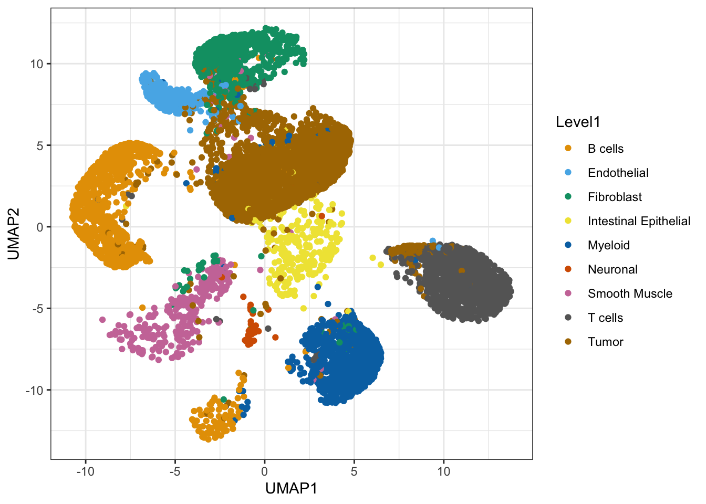
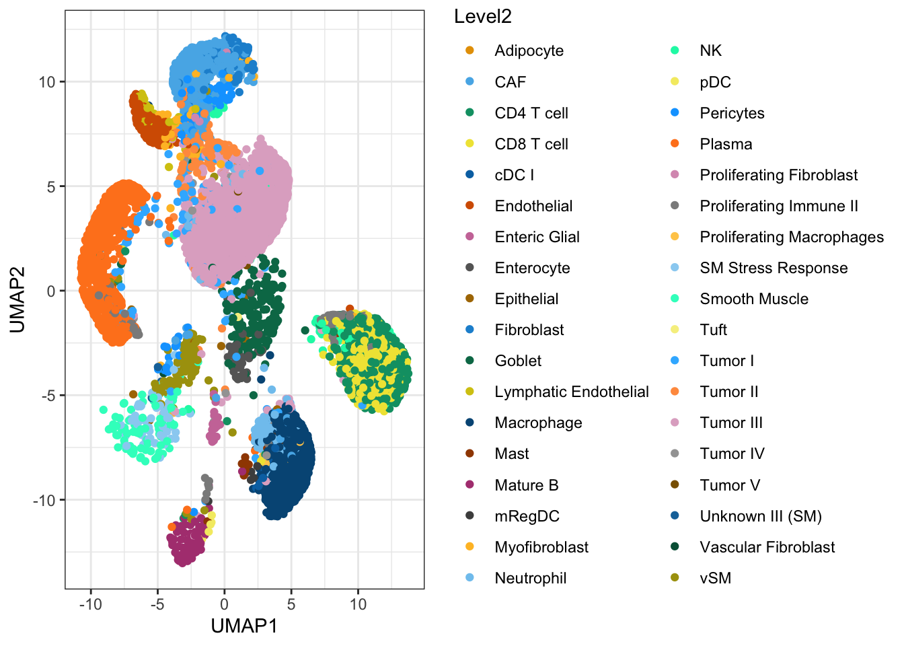
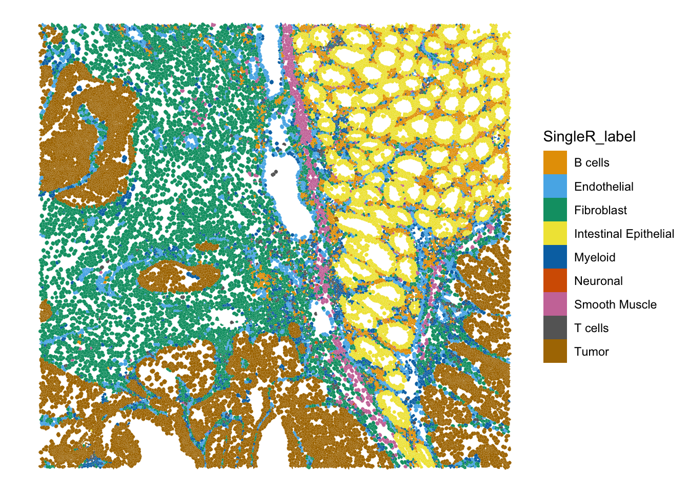
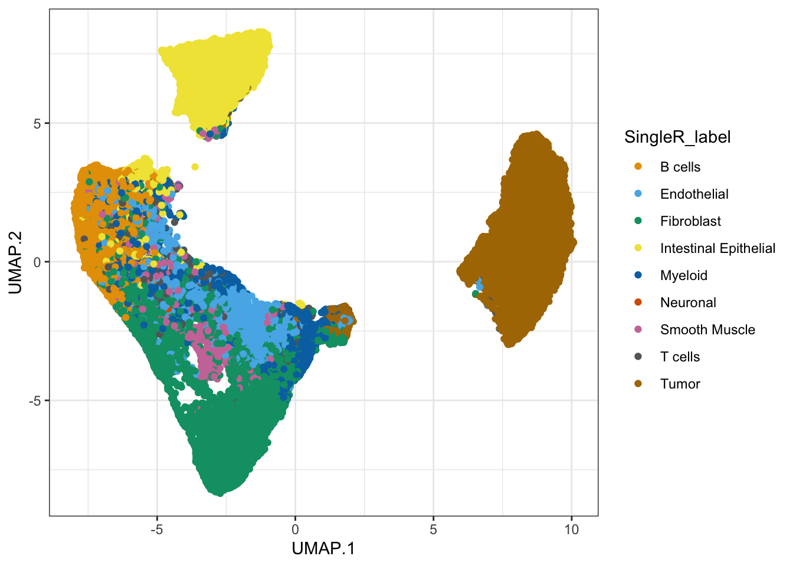
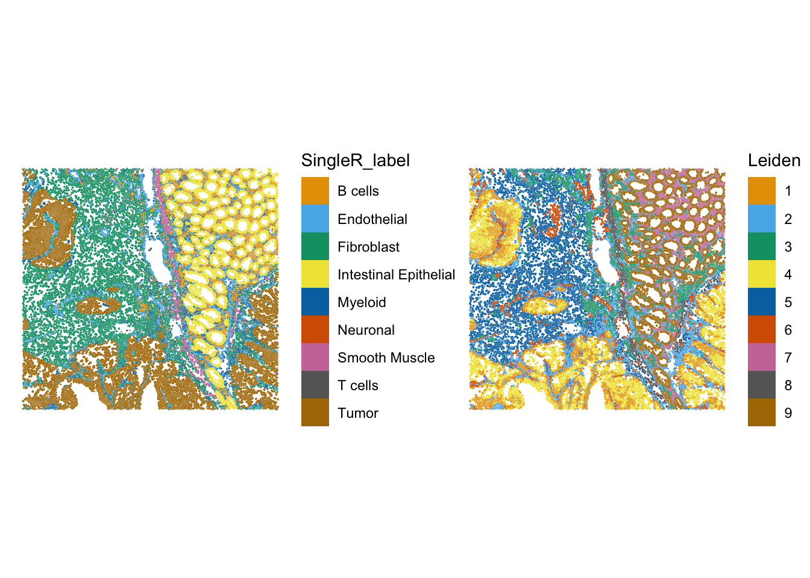
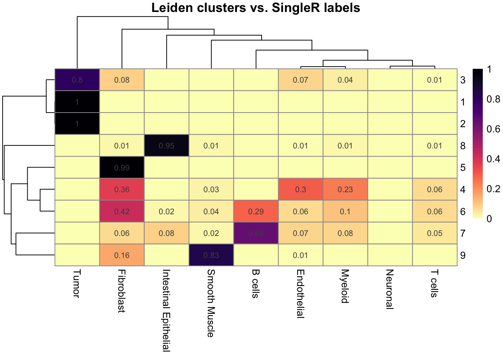

Exercise 7: Annotation
Dataset loading
We will start by loading the segmented Visium HD dataset stored in the SpatialFeatureExperiment object generated in the previous exercise. It contains information on the non-spatially-aware and spatially-aware clusters computed with graph-based clustering Banksy and PCA.
# Reload the SpatialFeatureExperiment object if not in the R session already
sfe <- readObject("results/day2/02.3_sfe/")
sfeclass: SpatialFeatureExperiment
dim: 18878 33763
metadata(2): resources spatialList
assays(2): counts logcounts
rownames(18878): OR4F5 SAMD11 ... DEPRECATED_ENSG00000291096
DEPRECATED_TRIM16L
rowData names(5): ID Symbol Type subsets_Mito hvg
colnames(33763): cellid_000080404-1 cellid_000080411-1 ...
cellid_000189331-1 cellid_000189341-1
colData names(33): sample_id area ... Leiden Banksy
reducedDimNames(5): PCA_artifacts PCA PCA_banksy UMAP UMAP_banksy
mainExpName: Gene Expression
altExpNames(0):
spatialCoords names(2) : pxl_col_in_fullres pxl_row_in_fullres
imgData names(4): sample_id image_id data scaleFactor
unit:
Geometries:
colGeometries: centroids (POINT), cellSeg (POLYGON)
Graphs:
sample01: To transfer cell-type labels to out Visium HD dataset, we will use a matching scRNA-seq dataset generated by the 10X team for the same article. See the record on GEO.
Which technology was used to generate the scRNA-seq dataset and how was the experiment designed?
This scRNA-seq was generated with the 10X FLEX technology, which is probe-based and allows to work with FFPE tissue blocks.
Sample barcodes, sequenced together with the probe sequences allow to pool multiple samples together and then demultiplex them. Here 2 pools of 2 samples (P2CRC/P4CRC, P3NAT/P5NAT) and 1 pool of 4 samples (P1CRC/P3CRC/P5CRC/P2NAT) were created, so 8 samples in total, and each pool was sequenced on multiple 10X Chromium lanes.
Download the FLEX dataset
We will download the scRNA-seq data from GEO, but this doesn’t include the cell metadata, in particular the annotated cell type that we need here. This is available from Github: https://github.com/10XGenomics/HumanColonCancer_VisiumHD/tree/main
options(timeout = 1000)
if (!dir.exists("data/FLEX/")) {
download.file(
url = "https://ftp.ncbi.nlm.nih.gov/geo/series/GSE280nnn/GSE280311/suppl/GSE280311_RAW.tar",
destfile = "data/GSE280311_RAW.tar",
mode = "wb"
)
untar(
tarfile = "data/GSE280311_RAW.tar",
exdir = "data/FLEX/"
)
file.remove("data/GSE280311_RAW.tar")
## Download the cell metadata from 10X Github page
download.file(
url = "https://raw.githubusercontent.com/10XGenomics/HumanColonCancer_VisiumHD/refs/heads/main/MetaData/SingleCell_MetaData.csv.gz",
destfile = "data/FLEX/SingleCell_MetaData.csv.gz",
mode = "wb"
)
} else {
message("Data exists, please proceed to next steps!")
}Load the P2CRC sample
The sample matching our Visium HD and Xenium dataset was sequenced on 4 10X channels. For simplicity here, we only load the cell from one channel.
list.files("data/FLEX/", pattern = "P2CRC") [1] "GSM8594533_P1L1_P2CRC_BC1_count_filtered_feature_bc_matrix.h5"ref.sce <- DropletUtils::read10xCounts("data/FLEX/GSM8594533_P1L1_P2CRC_BC1_count_filtered_feature_bc_matrix.h5")
ref.sceclass: SingleCellExperiment
dim: 18082 10397
metadata(1): Samples
assays(1): counts
rownames(18082): ENSG00000187634 ENSG00000188976 ... ENSG00000198695
ENSG00000198727
rowData names(3): ID Symbol Type
colnames: NULL
colData names(2): Sample Barcode
reducedDimNames(0):
mainExpName: NULL
altExpNames(0):colnames(ref.sce) <- ref.sce$Barcode
rownames(ref.sce) <- uniquifyFeatureNames(
ID = rowData(ref.sce)$ID,
names = rowData(ref.sce)$Symbol
)
## We will need the logcounts for the annotation
ref.sce <- logNormCounts(ref.sce)
ref.sceclass: SingleCellExperiment
dim: 18082 10397
metadata(1): Samples
assays(2): counts logcounts
rownames(18082): SAMD11 NOC2L ... MT-ND6 MT-CYB
rowData names(3): ID Symbol Type
colnames(10397): AAACAAGCAACAGCACACTTTAGG-1 AAACAAGCAACAGCTAACTTTAGG-1
... TTTGTGAGTCGTTCGAACTTTAGG-1 TTTGTGAGTTTACCGGACTTTAGG-1
colData names(3): Sample Barcode sizeFactor
reducedDimNames(0):
mainExpName: NULL
altExpNames(0):How many cells were sequenced in this specific run? Why are counts available for only 18,082 genes? What type of information is available in the colData?
We loaded here 10,397 cells from one 10X channel run of the P2CRC sample (multiplexed with another channel).
The FLEX technology is probe-based so it doesn’t cover the full transcriptome, mostly the protein-coding genes are targeted.
So far, there is no information on the cells in the object, expect their 10X barcode.
Load the annotation
[1] 279609 8head(cell_metadata) Barcode Patient BC QCFilter Level1 Level2
1 AAACAAGCAACAGCACACTTTAGG-1 P2CRC BC1 Remove QC_Filtered QC_Filtered
2 AAACAAGCAACAGCTAACTTTAGG-1 P2CRC BC1 Keep B cells Plasma
3 AAACAAGCAACTGTTCACTTTAGG-1 P2CRC BC1 Keep T cells CD4 T cell
4 AAACAAGCAAGGCCTGACTTTAGG-1 P2CRC BC1 Keep Tumor Tumor III
5 AAACAAGCACATAGTGACTTTAGG-1 P2CRC BC1 Keep Tumor Tumor III
6 AAACAAGCAGCATTTCACTTTAGG-1 P2CRC BC1 Keep Myeloid Macrophage
UMAP1 UMAP2
1 3.9868812 4.3530427
2 -10.4759963 -0.2676283
3 11.0405902 -5.0512951
4 0.4739105 3.7213750
5 2.3165844 4.8091193
6 6.3369237 -7.7051039
FALSE TRUE
1409 8988 ref.sce <- ref.sce[, cell_metadata$Barcode]
colData(ref.sce) <- cbind(colData(ref.sce), cell_metadata)
## Explore the annotated object
data("ditto_colors")
ggcells(ref.sce, aes(x = UMAP1, y=UMAP2, color=Level1)) +
geom_point() +
scale_colour_manual(values = ditto_colors) +
theme_bw() 
ggcells(ref.sce, aes(x = UMAP1, y=UMAP2, color=Level2)) +
geom_point() +
scale_colour_manual(values = ditto_colors) +
theme_bw() 
What do you observe?
The cell types match the expectations based on the tissue sample we could study earlier in the course. It includes tumore cells, stromal cells and immune cells.
A few cells in the dataset could be misannotated, although this might be an impression induced by the distortion typical of dimensionality reductions like UMAP.
Perform the anotation with SingleR
To annotate each cell, we use the SingleR() method, which uses a correlation-based approach comparing cells from the Visium HD dataset to reference cells from the FLEX dataset with known cell-type annotation.
We will use below the highest-level annotation available. A pseudo-bulk aggregation step before the comparison allows for a better performance. We also disable the fine tuning setp for faster computation here:
B cells Endothelial Fibroblast
990 309 1058
Intestinal Epithelial Myeloid Neuronal
252 1120 32
Smooth Muscle T cells Tumor
297 1250 3680
B cells Endothelial Fibroblast
3616 2546 8377
Intestinal Epithelial Myeloid Neuronal
5057 2296 34
Smooth Muscle T cells Tumor
942 906 9989 # visualize the predictions on the tissue slide.
plotSpatialFeature(sfe,
colGeometryName = "cellSeg",
features = "SingleR_label")
## Or on the UMAP
ggcells(sfe, aes(x = UMAP.1, y=UMAP.2, color=SingleR_label)) +
geom_point() +
scale_colour_manual(values = ditto_colors) +
theme_bw() 
What do you think about this annotation?
How do the proportions of different cell types compare to the annotated scRNA-seq dataset?
Do you identify potentially relevant biological structures? Go back to the calculated clusters and spatial domains, to see how do they match.
Try annotating the dataset with the higher-resolution cell-types lables in ref.sce$Level2
Let’s calculate the proportion of cells from each cell type:
prop.table(table(ref.sce$Level1))
B cells Endothelial Fibroblast
0.110146862 0.034379172 0.117712506
Intestinal Epithelial Myeloid Neuronal
0.028037383 0.124610592 0.003560303
Smooth Muscle T cells Tumor
0.033044059 0.139074321 0.409434802 prop.table(table(sfe$SingleR_label))
B cells Endothelial Fibroblast
0.10709949 0.07540799 0.24811184
Intestinal Epithelial Myeloid Neuronal
0.14977934 0.06800344 0.00100702
Smooth Muscle T cells Tumor
0.02790036 0.02683411 0.29585641 We observe a relatively higher proportion of Endothelial cells and Fibroblast in the Visium HD. Maybe such cell-types are less easily captured by the droplet-based scRNA-seq technology?
The annotation allows us to identify the different structures of the intestine mucosa very clearly, with the epithelial cells composing the intestinal villi, the smooth muscle layer, and the more scattered immune cells. In this colorectal cancer sample, the invading tumor is identified very clearly.
Let’s compare the annotation to the Leiden clustering for example:
plotSpatialFeature(sfe,
colGeometryName = "cellSeg",
features = "SingleR_label") +
plotSpatialFeature(sfe,
colGeometryName = "cellSeg",
features = "Leiden")
## For a more formal comparison
tab_prop <- prop.table(table(sfe$Leiden, sfe$SingleR_label), margin = 1)
## Display the proportions: round and remove 0s
num_mat <- round(tab_prop, 2)
num_mat[num_mat == 0] <- ""
pheatmap(
tab_prop,
cluster_rows = TRUE,
cluster_cols = TRUE,
color = viridis(100, option = "magma", direction = -1),
display_numbers = num_mat,
main = "Leiden clusters vs. SingleR labels",
annotation_colors = list(SingleR_label = setNames(object = ditto_colors[1:9], colnames(tab_prop)))
)
Perform the same annotation task on the Xenium dataset. How do the results compare? What could be a limitation here?
One limitation of this Xenium dataset is the limited number of genes targeted by the probe panel. Some recent benchmarks seem to suggest that the classical scRNA-seq annotation methods (label-transfer methods) perform relatively well: https://link.springer.com/article/10.1186/s12859-025-06044-0
We ignored the fact that segmented data suffer from segmentation error, that multiple cells can overlap on the slide, and that spatial data in general suffers from local diffusion of transcripts. All these result in contamination of each cell’s transcriptome with transcripts from other cells.
It is possible to use deconvolution methods to “decontaminate” the cells. For example the RCTD method from the spacexr package (Cable et al. 2022) can be used in flag these cases and provide a principled estimate of the most likely composition. Try to run this method on our dataset, you can refer to this section of the OSTA book for guidance.
How do you interpret the results?
See the vignette here: https://raw.githack.com/dmcable/spacexr/master/vignettes/spatial-transcriptomics.html
## Install latest version from Github
BiocManager::install("dmcable/spacexr")
library(spacexr)
sort(table(ref.sce$Level2))
## We need a minimum of 25 cells for each cell type in the reference, so we'll go for Level1 here
reference <- Reference(counts(ref.sce),
cell_types=setNames(factor(ref.sce$Level1), nm = colnames(ref.sce)),
nUMI=colSums(counts(ref.sce)))
## Create SpatialRNA object
to_annotate <- SpatialRNA(coords=data.frame(spatialCoords(sfe)),
counts=counts(sfe),
nUMI=colSums(counts(sfe)))
rctd_data <- create.RCTD(to_annotate, reference)
## Run RCTD
res <- run.RCTD(rctd_data, doublet_mode="doublet")
## We use here the "doublet" mode to fit at most two cell types per segmented cell, probably this is a reasonable assumption for a high-resolution technology such as Visium HD.
## Inspect results
results <- res@results
# normalize the cell type proportions to sum to 1.
norm_weights <- normalize_weights(results$weights)
cell_type_names <- res@cell_type_info$info[[2]] #list of cell type names
# Plots the confident weights for each cell type as in full_mode (saved as
# 'results/cell_type_weights.pdf')
plot_weights(cell_type_names, to_annotate, "./results/", norm_weights)
## Likely "doublets"
sfe$RCTD.doublet <- NA
colData(sfe)[row.names(results$results_df), ]$RCTD.doublet <- as.character(results$results_df$spot_class)
plotSpatialFeature(sfe,
colGeometryName = "cellSeg",
features = "RCTD.doublet")
## Extract major cell type
sfe$RCTD.first <- NA
colData(sfe)[row.names(results$results_df), ]$RCTD.first <- as.character(results$results_df$first_type)
plotSpatialFeature(sfe,
colGeometryName = "cellSeg",
features = "RCTD.first")
## Plotting the normalized weights for each cell type
lapply(colnames(norm_weights), \(k) {
colData(sfe)$foo <- NA
colData(sfe)[row.names(norm_weights), ]$foo <- norm_weights[, k]
plt <- plotSpatialFeature(sfe, features = "foo") +
scale_color_gradientn(colors=pals::jet())
plt + ggtitle(k) + guides(fill="none")
}) |>
wrap_plots(nrow=3)Saving the final SpatialFeatureExperiment object
alabaster.sfe::saveObject(sfe, "results/day2/02.4_sfe")